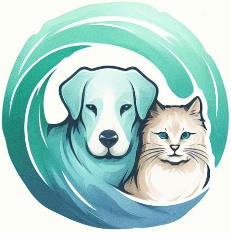

Garritas Del Mundo
Amor y cuidado animal
En medio del ajetreo y el bullicio de la ciudad, se alza un refugio especial: Garritas Del Mundo
Es más que una simple tienda de mascotas; es un espacio donde cada criatura peluda, escamosa o emplumada es tratada como una estrella. En este lugar, el amor y el cuidado por los amigos de cuatro patas son la norma, y cada detalle, desde el alimento hasta los juguetes y accesorios, está cuidadosamente seleccionado para garantizar el bienestar de cada mascota y la felicidad de sus dueños.
